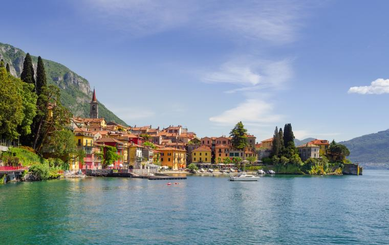

Historia
Historia Włoch – W epoce żelaza tereny Włoch zamieszkiwali Ligurowie i Sykulowie, a także liczne inne plemiona italskie, celtyckie i iliryjskie. W okresie starożytności tereny Włoch znalazły się pod panowaniem Rzymian. Przed okresem rzymskim tereny Włoch były zamieszkiwane przez Fenicjan i Greków. Od średniowiecza do Risorgimento, pomimo że Półwysep Apeniński był spójny pod względem językowym i kulturowym, jego historia składała się z dziejów niezależnych republik i księstw oraz obcych posiadłości i stref wpływów. W 1861 roku doszło do zjednoczenia ziem włoskich, w wyniku którego powstało Królestwo Włoch, na którego tronie zasiadł Wiktor Emanuel II. W początkach XX wieku Włochy stały się państwem faszystowskim.
Kultura
Włochy w czasie swojej długiej historii ukształtowane zostały pod wpływem różnorodnych kultur. Przy tym udało się przez tysiąclecia zachować to bogactwo kultury. Podziwiać tu można: wczesną architekturę Etrusków (zabytki związane z chowaniem zmarłych), antyczne świątynie Greków i inne znane pomniki historii umieszczone w muzeach. Od ruin imperium Romanum, przez wspaniałe arcydzieła renesansu i baroku, aż po futuryzm i neorealizm XX wieku - oto obraz Włoch. Kulturalna scena Włoch nie ogranicza się jednak tylko do stolicy - wystarczy wspomnieć duże ośrodki Mediolan, Wenecję, Florencję i Neapol. W ostatnich latach dzięki przeprowadzonym na wielką skalę renowacjom przywrócono do życia kulturalnego wiele zabytków (np. prace renowacyjne nad Ostatnią wieczerzą Leonarda da Vinci i otwarcie podziemnych pomieszczeń rzymskiego pałacu Nerona - Złotego Domu (Domus Aurea).
